praatpicture('ex/tg.wav')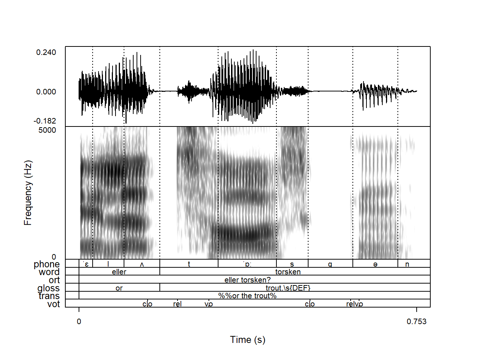
When plotting a sound file, annotations are plotted along with the sound file as long as a .TextGrid file with the same base filename is available in the same directory on your computer:
praatpicture('ex/tg.wav')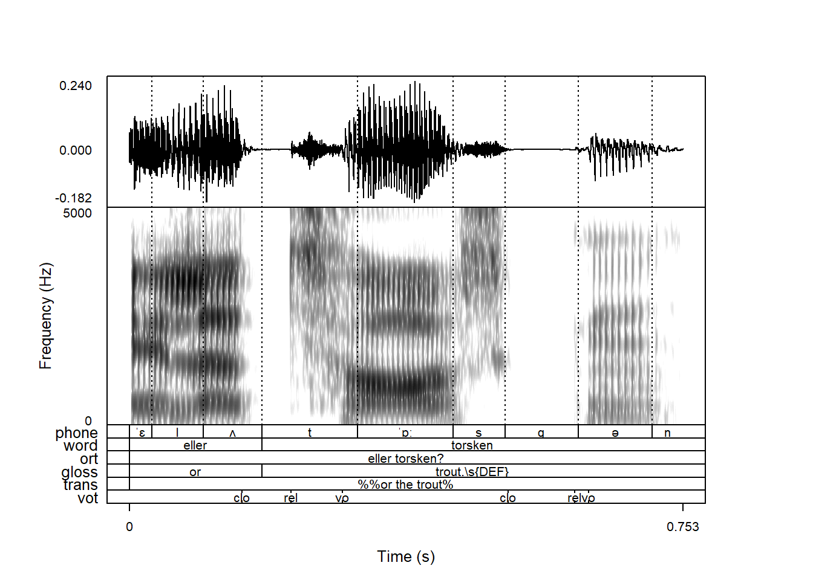
The gloss and trans tiers look a bit weird! We’ll see why in Section 4.5.
If there is no .TextGrid file available, you will get the following warning:
praatpicture('ex/no_tg.wav')Error in praatpicture("ex/no_tg.wav"): There is no TextGrid file available for this sound file. Either create the plot without a TextGrid by using the frames argument, create a TextGrid object using the make_TextGrid() function and pass it to the tg_obj argument, or create a TextGrid using Praat or the functionality available in the rPraat package.If your sound and TextGrid files have different base filenames, you can use the the tg_file argument to specify a TextGrid file, like so:
praatpicture('ex/no_tg.wav',
tg_file = 'ex/tg.TextGrid')The make_TextGrid() function is introduced in Chapter 11.
The above figure has six annotation tiers, which is probably not an unusual situation, but in these cases it’s also nice to have the option of not plotting all of them. This behavior can be controlled with the tg_tiers argument. If we only want to plot the first tier, we can do the following:
praatpicture('ex/tg.wav',
tg_tiers = 1)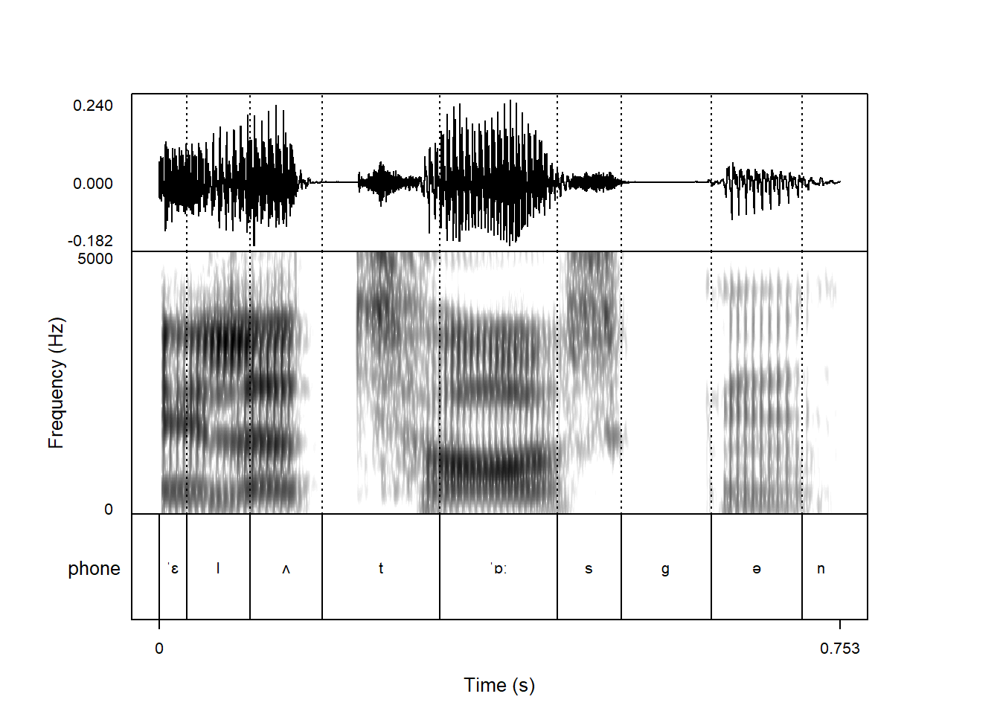
We can also index tiers by their names instead of numbers. If we wanted to plot only the vot tier with voice onset time related landmarks:
praatpicture('ex/tg.wav',
tg_tiers = 'vot')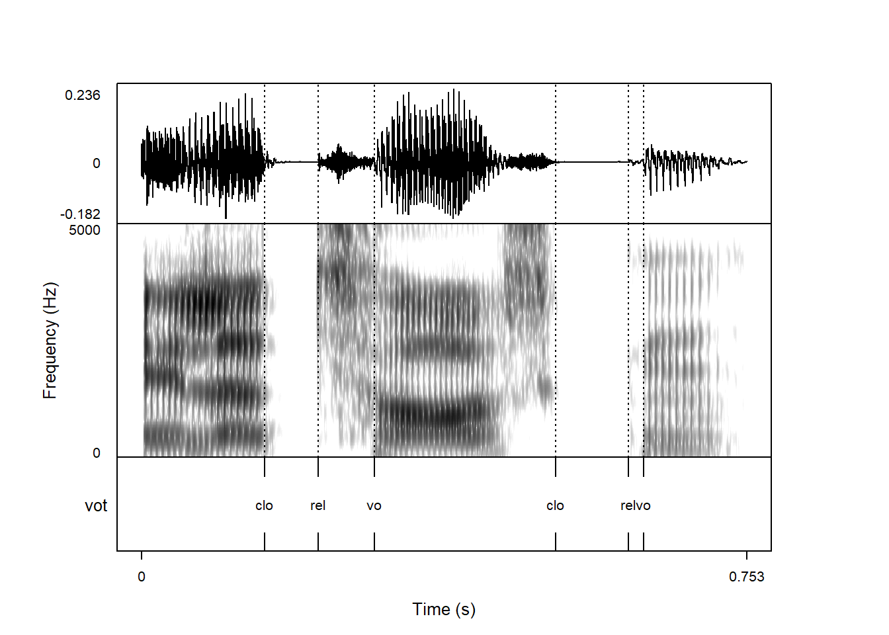
We can index as many tiers as we want this way, and can also use it to change the order in which tiers are plotted:
praatpicture('ex/tg.wav',
tg_tiers = c('vot', 'phone', 'word'))When combining annotations with signals, you will by default see vertical lines throughout all plot components corresponding to boundaries in the first annotation tier. This is unlike in Praat, where you will by default see lines corresponding to all annotation tiers. This behavior is controlled with the tg_focusTier argument; a “focus tier” is the term we use for (a) tier(s) important enough to be shown throughout all plot components.
tg_focusTier is by default set to 1, i.e. the first tier. It also understands all, corresponding to the Praat defaults:
praatpicture('ex/tg.wav',
tg_tiers = c('vot', 'phone', 'word'),
tg_focusTier = 'all')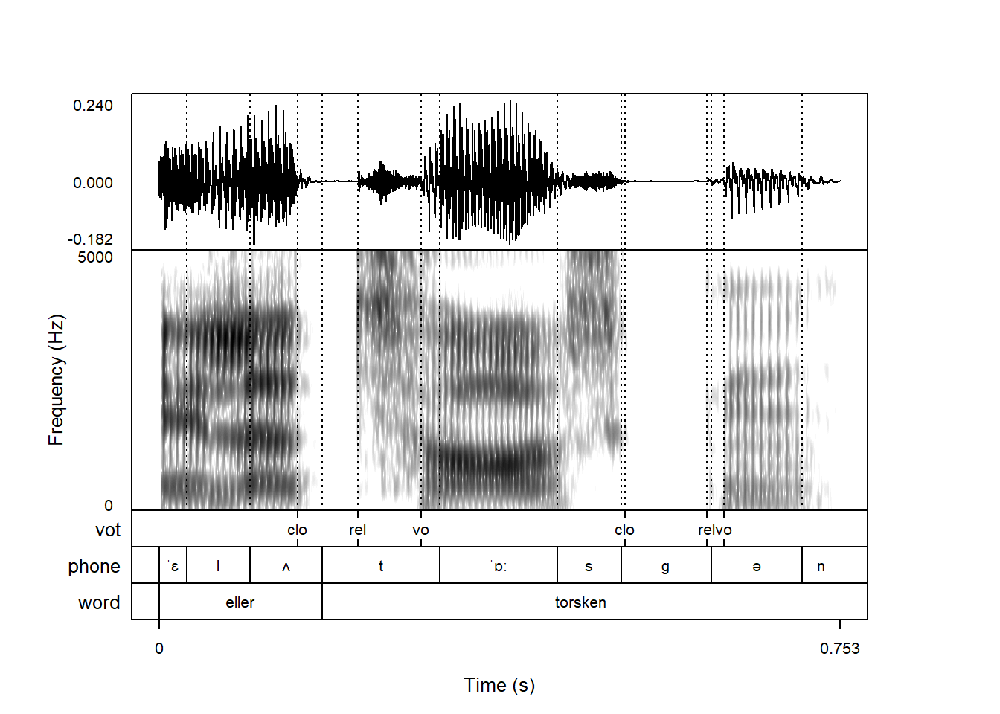
If you want to plot annotations but aren’t interested in these vertical lines, tg_focusTier also understands none:
praatpicture('ex/tg.wav',
tg_tiers = c('vot', 'phone', 'word'),
tg_focusTier = 'none')
Or you can pass a vector of which tiers should be highlighted.
The argument tg_focusTierLineType controls the vertical line type. The default is dotted, but you can use any of the base R plotting line types, fx longdash:
praatpicture('ex/tg.wav',
tg_tiers = c('vot', 'phone', 'word'),
tg_focusTier = c('vot', 'phone'),
tg_focusTierLineType = 'longdash')If you have multiple “focus tiers” as above, it’s possible to use different line types for different tiers by passing a vector to tg_focusTierLineType. This can help differentiate the ‘source’ of the different vertical lines.
praatpicture('ex/tg.wav',
tg_tiers = c('vot', 'phone', 'word'),
tg_focusTier = c('vot', 'phone'),
tg_focusTierLineType = c('dashed', 'solid'))A similar result can be achieved with coloring, as shown below.
Annotation text is black by default, but the color of annotations can be controlled with the tg_color argument. Fx if we want blue annotations:
praatpicture('ex/tg.wav',
tg_tiers = c('vot', 'phone', 'word'),
tg_color = 'blue')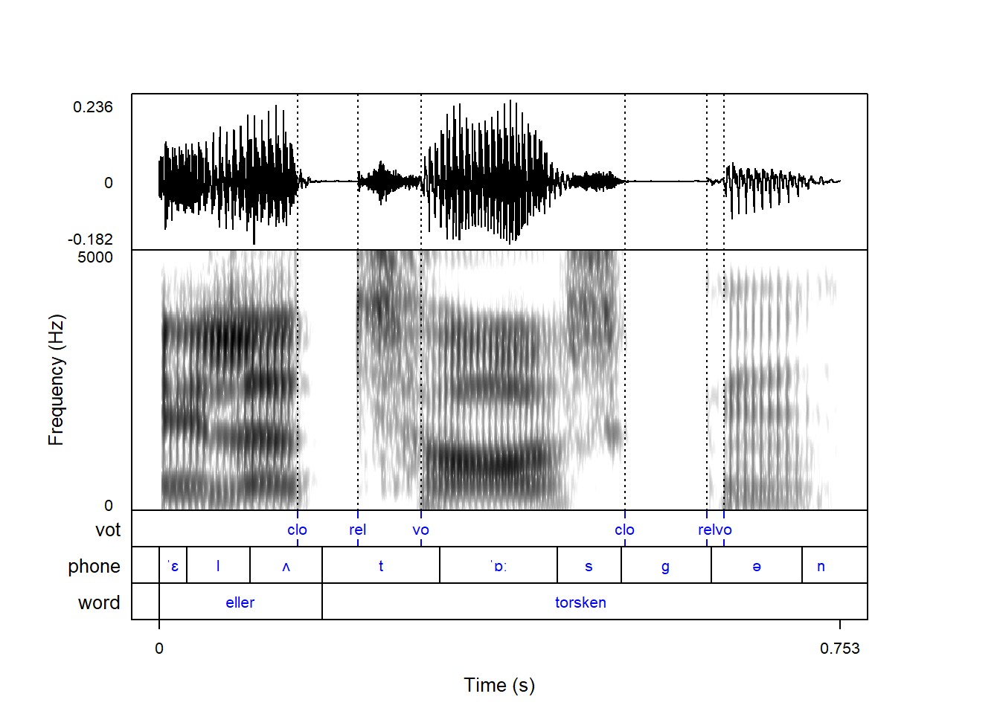
The color of vertical lines corresponding to annotation boundaries can be controlled with the tg_focusTierColor argument. For blue solid lines, we can use the following code:
praatpicture('ex/tg.wav',
tg_tiers = c('vot', 'phone', 'word'),
tg_color = 'blue',
tg_focusTierLineType = 'solid',
tg_focusTierColor = 'blue')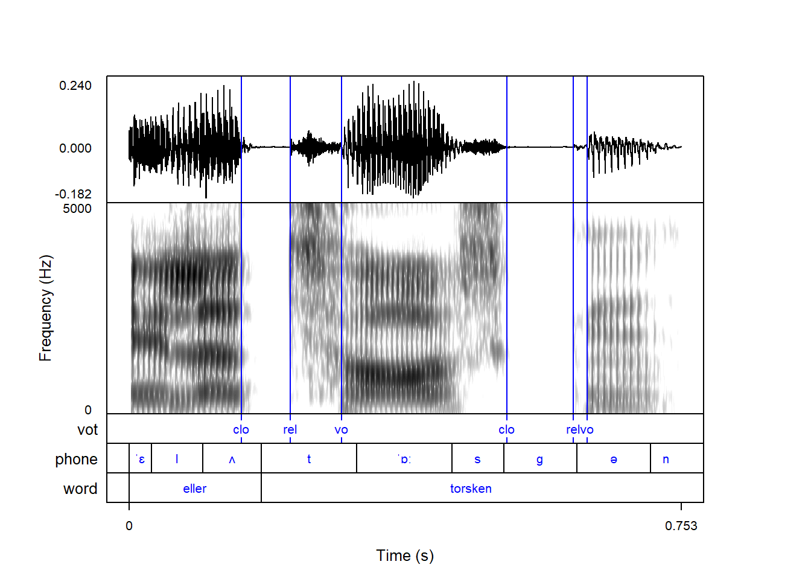
You can pass multiple values to tg_color if you want the different tiers to have different colors:
praatpicture('ex/tg.wav',
tg_tiers = c('vot', 'phone', 'word'),
tg_color = c('blue', 'orange', 'black'))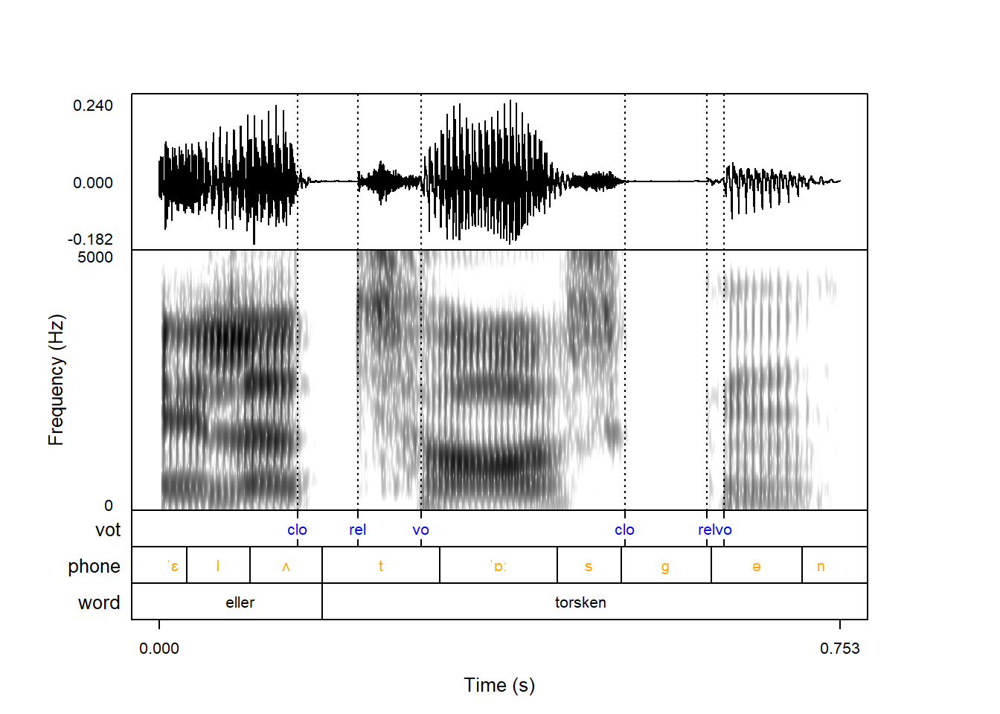
This can be especially useful if you have multiple “focus tiers”, because you can then use a coloring scheme to show which vertical lines correspond to which colors, like so:
praatpicture('ex/tg.wav',
tg_tiers = c('vot', 'phone', 'word'),
tg_color = c('blue', 'orange', 'black'),
tg_focusTier = 'all',
tg_focusTierLineType = c('solid', 'solid', 'dashed'),
tg_focusTierColor = c('blue', 'orange', 'black'))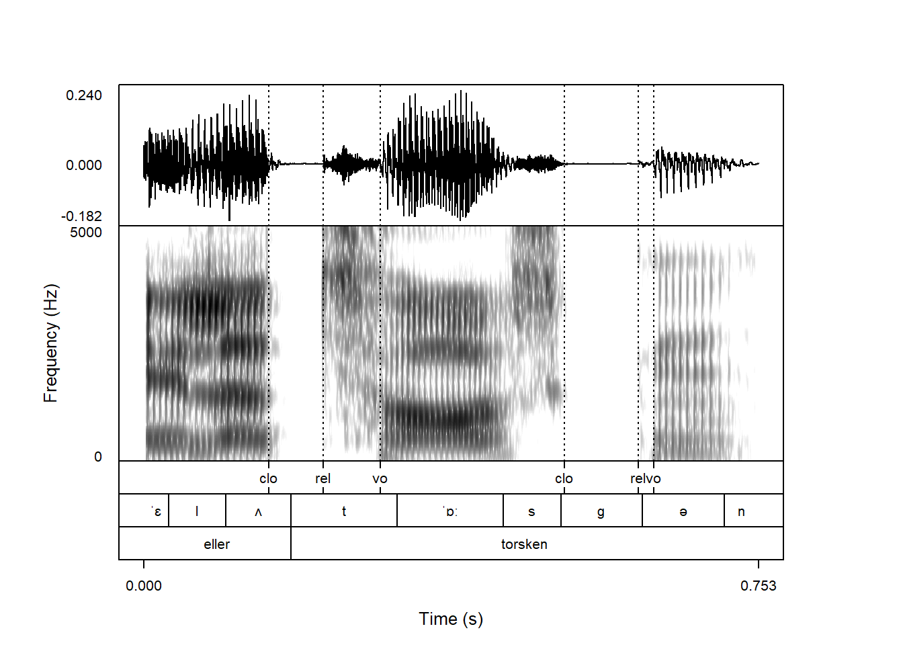
In this case, the line types are also differentiated to show when the phone and word boundaries overlap with a dashed orange/black line.
By default, the names of annotation tiers are plotted next to the tiers. Praat does not do this by default. It can be controlled with the tg_tierNames argument, which is TRUE by default.
praatpicture('ex/tg.wav',
tg_tiers = c('vot', 'phone', 'word'),
tg_tierNames = FALSE)Praat has some shortcuts used for special typesetting in TextGrids:
% will turn the following symbol italic;# will turn the following symbol bold;#% will turn the following symbol bold italic;^ will superscript the following symbol;_ will subscript the following symbol;\s{...} will be rendered in small caps;%% ... % will all be italic, and the same with ## ... #, ^^ ... ^, etc.praatpicture does not emulate this behavior with default:
praatpicture('ex/tg.wav',
tg_tiers = c('word', 'gloss', 'ort', 'trans'))It can however be emulated by setting the argument tg_specialChar to TRUE:
praatpicture('ex/tg.wav',
tg_tiers = c('word', 'gloss', 'ort', 'trans'),
tg_specialChar = TRUE)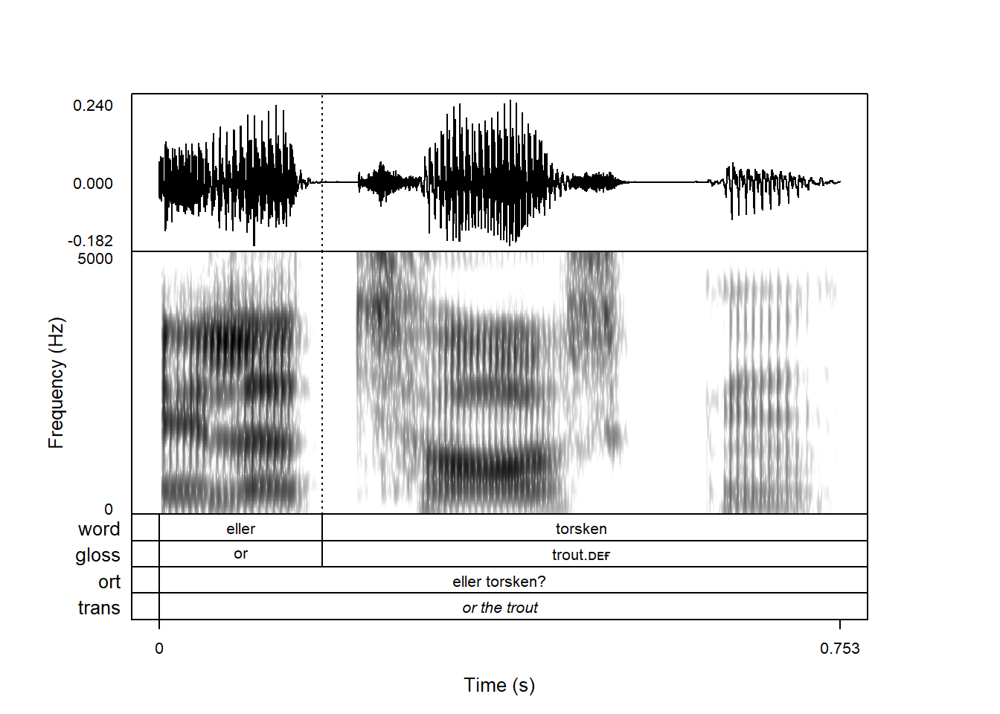
There are a few reasons for this, one being that this special typesetting will make phonetic transcriptions using X-SAMPA render very weirdly. Another reason is that in order to vary the typeface like this in a base R plot, the text cannot be rendered as a string, but must be rendered as an expression, which is a different type of object in R. For some obscure reason lost to time, vertical alignment works slightly differently for strings and expressions, which can mean that text isn’t perfectly centrally aligned when tg_specialChar = TRUE; more details in help(text).
Praat also has a whole bunch of codes for rendering special symbols, including IPA characters. These are not implemented praatpicture (yet), but any Unicode character in a TextGrid should render just fine.
The default is for annotations to be horizontally aligned in the middle of intervals, but it’s also possibly to right-align or left-align them. This is controlled with the tg_alignment argument.
Here the text is right-aligned:
praatpicture('ex/tg.wav',
tg_tiers = c('phone', 'word', 'gloss', 'ort', 'trans'),
tg_specialChar = TRUE,
tg_alignment = 'right')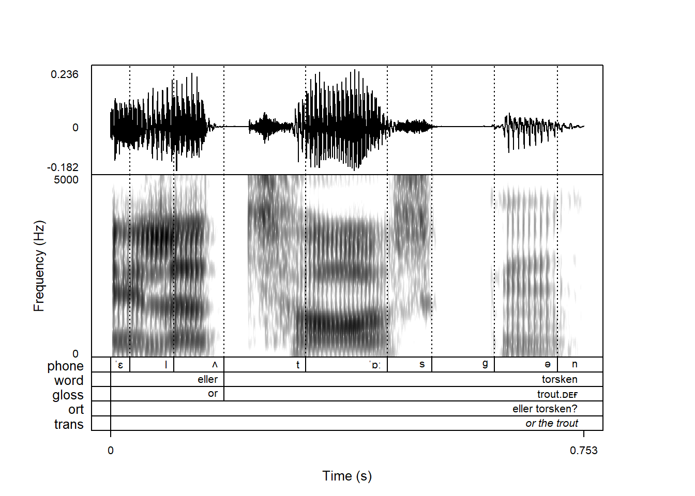
The alignment doesn’t have to be the same for every tier. For example, you might want the regular central alignment for the phone and word tiers, but for the rest it might make sense to have them left-aligned. This can be achieved as follows:
praatpicture('ex/tg.wav',
tg_tiers = c('phone', 'word', 'gloss', 'ort', 'trans'),
tg_specialChar = TRUE,
tg_alignment = c('central', 'central',
'left', 'left', 'left'))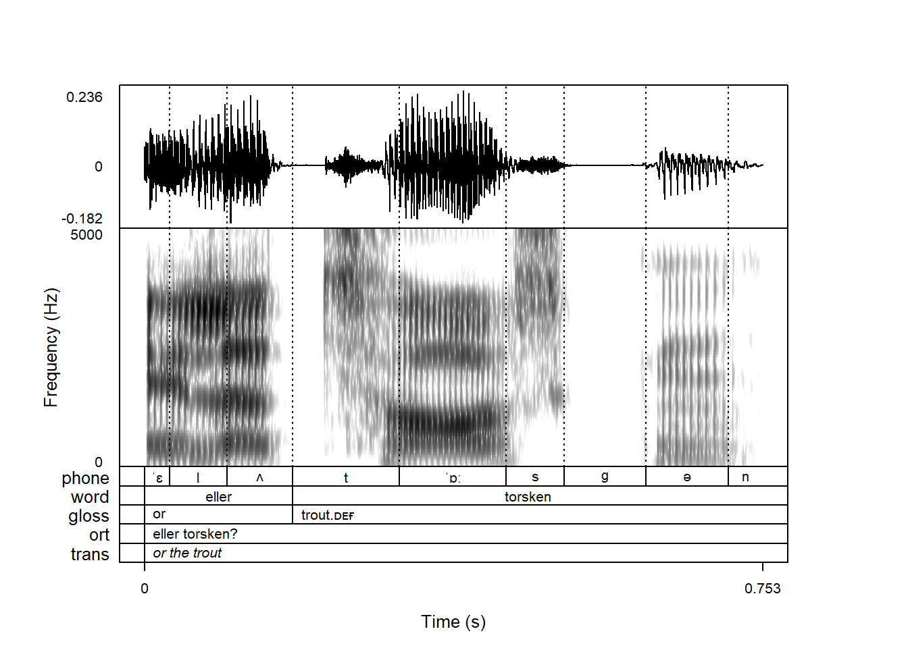